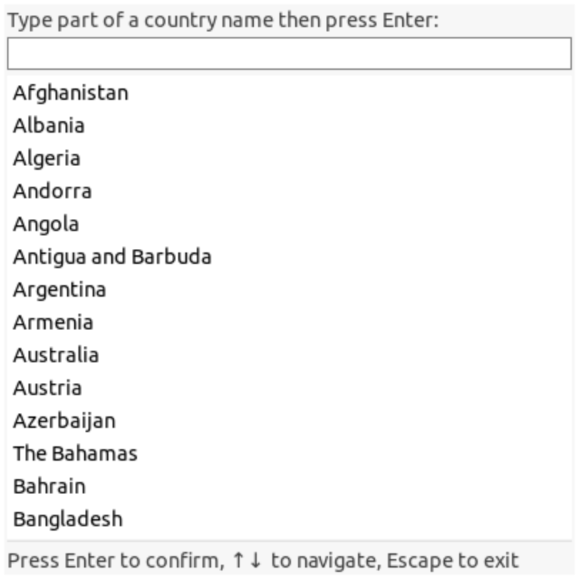

Search-list-box
| (require search-list-box) | package: search-list-box |
A list-box% with a search text-field%. See some examples here.

The search function can be customized.
Can navigate between the text-field and the list-box with arrow keys.
In the text field, press enter to validate; in the list-box press space.
Pressing Escape in the list-box returns to the text-field.
The filter function can be customized.
|
superclass: frame% |
constructor
(new search-list-box-frame% [ [message message] [width width] [height height] [contents contents] [filter filter] [key key] [callback callback] [close-on-escape? close-on-escape?] [show? show?]]) → (is-a?/c search-list-box-frame%) message : (or/c label-string? #f) = #f width : (or/c dimension-integer? #f) = 400 height : (or/c dimension-integer? #f) = 400 contents : list? = '() filter : (-> string? label-string? any/c) = default-filter key : (-> any/c string?) = ~a
callback :
(-> (or/c number? #f) (or/c label-string? #f) any/c any) = (λ (idx label content) (void)) close-on-escape? : boolean? = #t show? : boolean? = #t Creates a simple frame that contains a single search-list-box%. See search-list-box% and frame% for a description of the arguments; All the initialization arguments of frame% are also available. The argument message is the label for the text-field%, whereas the argument label is the label for the frame%.Minimal example:
#lang racket (require search-list-box) (define slb (new search-list-box-frame% [label "Searching..."] [contents '(1 2 3 a1 a2 aa2 bb2 bb3)] [callback (λ (idx label content) (send slb set-status (if idx (format "Selected: ~a" content) "No content selected")))]))
method
(send a-search-list-box-frame get-search-list-box)
→ (is-a?/c search-list-box%) Returns the search-list-box% contained in the frame.
method
(send a-search-list-box-frame set-status str) → void?
str : label-string? Sets the status message to str.
|
superclass: vertical-panel% |
constructor
(new search-list-box% [ [label label] [text-field-mixin text-field-mixin] [list-box-mixin list-box-mixin] [filter filter] [key key] [callback callback] [close-on-escape close-on-escape]]) → (is-a?/c search-list-box%) label : (or/c label-string? #f) = #f
text-field-mixin :
(-> (subclass?/c text-field%) (subclass?/c text-field%)) = (λ (x) x)
list-box-mixin :
(-> (subclass?/c list-box%) (subclass?/c list-box%)) = (λ (x) x) filter : (-> string? label-string? any/c) = default-filter key : (-> any/c string?) = ~a
callback :
(-> (or/c number? #f) (or/c label-string? #f) any/c any) = (λ (idx label content) (void))
close-on-escape :
(or/c #f (is-a?/c frame%) (is-a?/c dialog%)) = #f The search-list-box% constructor also accepts all optional arguments of vertical-panel%.The key argument builds a label string from a element of contents. By default is just displays the elements of contents as a string.
The callback takes the currently selected index in the list-box (or the first one if none is selected), the corresponding displayed label-string and the corresponding content element in contents.
The filter argument allows the user to replace the default filter.
If a frame% or dialog% is passed to close-on-escape, then upon pressing escape in the text-field the frame or dialog is closed.
method
(send a-search-list-box get-list-box) → (is-a?/c list-box%)
Returns the internal list-box%.
method
(send a-search-list-box get-text-field)
→ (is-a?/c text-field%) Returns the internal text-field%.Sets the text in the text-field% to str.
method
(send a-search-list-box set-contents conts) → void?
conts : list? Replaces the current contents of the list box with conts. The key and filter are not changed.
procedure
(default-filter str lbl) → any/c
str : string? lbl : label-string?
(string-contains? (string-downcase str) (string-downcase lbl))
procedure
(word-filter str lbl) → any/c
str : string? lbl : label-string?
procedure
(regexp-filter str lbl) → any/c
str : string? lbl : label-string?